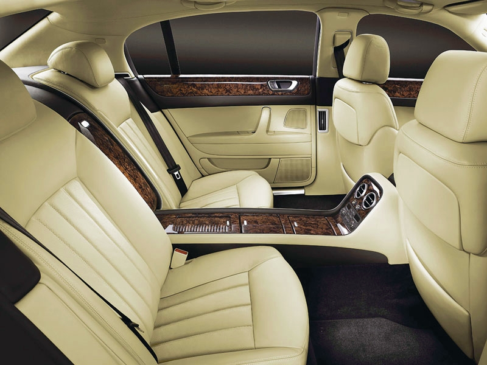

Кондиционер кожаных сидений
Изделия из натуральной кожи в салоне автомобиля подвержены, вредным для них, воздействиям солнечных лучей, влаги и перепадам температур. Под воздействием этих факторов кожа высыхает и растрескивается. Механические воздействия образуют на ней глубокие складки, которые, в процессе эксплуатации собирают пыль и активно загрязняются. Сиденья выглядят старыми и безжизненными.
.jpg)
Обработка кожи применяемым средством удаляет почти все виды загрязнений, защищает от ультрафиолетовых излучений. Насыщенный глицерином, препарат увлажняет и восстанавливает естественную мягкость кожи, препятствует отслоению красителя и впитыванию влаги. Данную обработку кожи рекомендуется производить два раза в месяц в летнее время и один раз в месяц зимой.
Кондиционер кожаных сидений очищает кожу, придает коже свежий внешний вид, восстанавливает естественную мягкость, защищает от трещин, вмятин. Специальная комплексная формула кондиционера обеспечивает быструю и эффективную очистку и защиту кожаной отделки салона от влаги, загрязнений и солнечных лучей. Кондиционер без запаха, без глянца, не оставляет следов на одежде. Рекомендуется пользоваться услугой 1 раз в месяц. Кондиционер необходимо наносить только на чистую поверхность, иначе теряется весь эффект, поэтому, если кожаные сидения загрязнены необходимо сначала сделать химчистку. В среднем услуга занимает от 10 до 15 минут, после чего кожа Вашего автомобиля будет оставаться мягкой и эластичной в течении 1 месяца, а в зимнее время года и дольше.
Также рекомендуем
Наномойка Антидождь Инновационный автошампунь Полировка «Жидкое стекло»